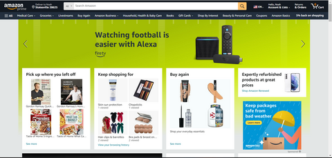
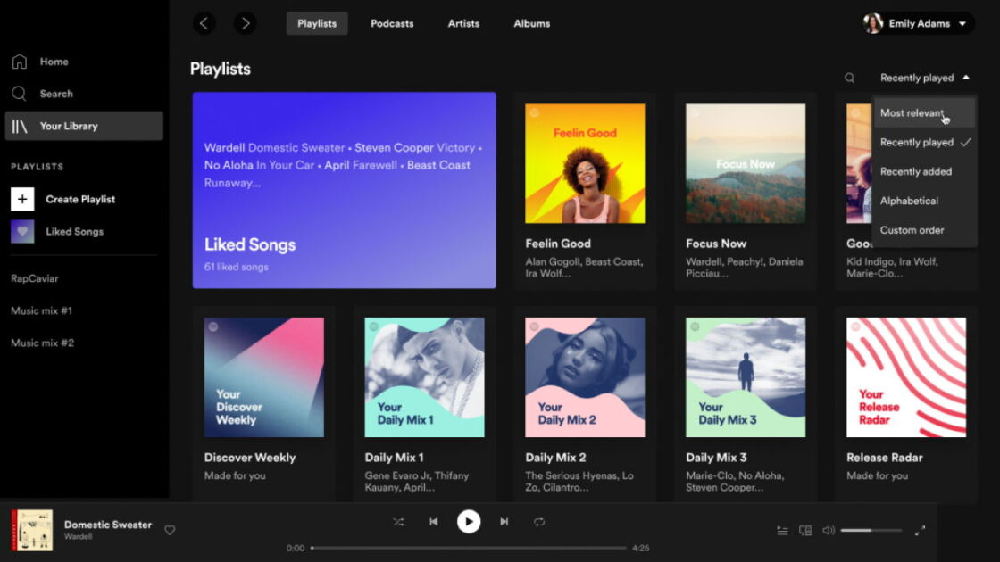

Visual Hierarchy
Amazon
amazon.com Visual Hierarchy is used to rank design elements and influence in the order you want your users to view them. By using principles like contrast, scale, balance and, more, you can help establish each element in its rightful place and help the most important elements stand out.
In the above picture we can see that the way they used this principle is by enlarging the things they want you to look at, like alex and then they made the other things that are not important smaller.
Hicks Law
Amazon
amazon.comHick's law, or the Hick Hyman Law, named after British and American psychologists William Edmund Hick and Ray Hyman, describes the time it takes for a person to make a decision as a result of the possible choices he or she has: increasing the number of choices will increase the decision time logarithmically.
In the picture above we see that Amazon has only one choice which is by now making the time you have to think about it shorter.
Fitt's law
Spotify
Spotify Fitt's law states that the amount of time required for a person to move a pointer to a target area is a function of the distance to the target divided by the size of the target. Thus, the longer the distance and the smaller the target's size, the longer it takes.
we can see that here in the above picture that the options that spotify have are spread out.